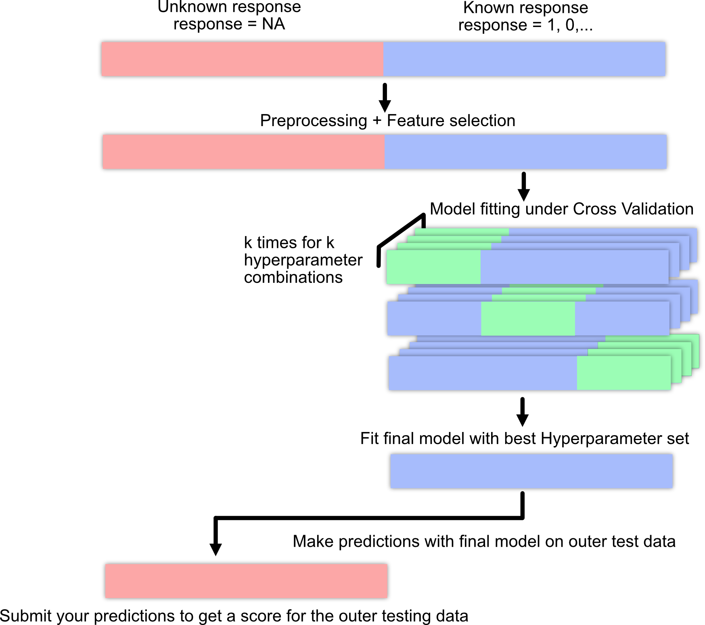
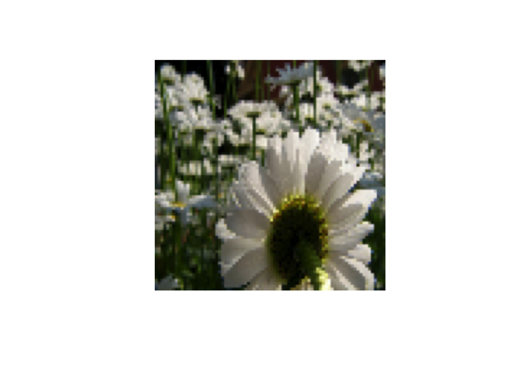

devtools::install_github(repo = "florianhartig/EcoData", subdir = "EcoData",
dependencies = TRUE, build_vignettes = FALSE)Appendix A — Datasets
You can download the data sets we use in the course here (ignore browser warnings) or by installing the EcoData package:
A.1 Machine learning pipeline / workflow

A.2 Titanic
The data set is a collection of Titanic passengers with information about their age, class, sex, and their survival status. The competition is simple here: Train a machine learning model and predict the survival probability.
The Titanic data set is very well explored and serves as a stepping stone in many machine learning careers. For inspiration and data exploration notebooks, check out this kaggle competition.
Response variable: “survived”
A minimal working example:
- Load data set:
library(EcoData)
data(titanic_ml)
titanic = titanic_ml
summary(titanic) pclass survived name sex
Min. :1.000 Min. :0.0000 Length:1309 female:466
1st Qu.:2.000 1st Qu.:0.0000 Class :character male :843
Median :3.000 Median :0.0000 Mode :character
Mean :2.295 Mean :0.3853
3rd Qu.:3.000 3rd Qu.:1.0000
Max. :3.000 Max. :1.0000
NA's :655
age sibsp parch ticket
Min. : 0.1667 Min. :0.0000 Min. :0.000 CA. 2343: 11
1st Qu.:21.0000 1st Qu.:0.0000 1st Qu.:0.000 1601 : 8
Median :28.0000 Median :0.0000 Median :0.000 CA 2144 : 8
Mean :29.8811 Mean :0.4989 Mean :0.385 3101295 : 7
3rd Qu.:39.0000 3rd Qu.:1.0000 3rd Qu.:0.000 347077 : 7
Max. :80.0000 Max. :8.0000 Max. :9.000 347082 : 7
NA's :263 (Other) :1261
fare cabin embarked boat
Min. : 0.000 :1014 : 2 :823
1st Qu.: 7.896 C23 C25 C27 : 6 C:270 13 : 39
Median : 14.454 B57 B59 B63 B66: 5 Q:123 C : 38
Mean : 33.295 G6 : 5 S:914 15 : 37
3rd Qu.: 31.275 B96 B98 : 4 14 : 33
Max. :512.329 C22 C26 : 4 4 : 31
NA's :1 (Other) : 271 (Other):308
body home.dest
Min. : 1.0 :564
1st Qu.: 72.0 New York, NY : 64
Median :155.0 London : 14
Mean :160.8 Montreal, PQ : 10
3rd Qu.:256.0 Cornwall / Akron, OH: 9
Max. :328.0 Paris, France : 9
NA's :1188 (Other) :639 - Impute missing values (not our response variable!):
library(missRanger)
library(dplyr)
set.seed(123)
titanic_imputed = titanic %>% select(-name, -ticket, -cabin, -boat, -home.dest)
titanic_imputed = missRanger::missRanger(data = titanic_imputed %>%
select(-survived), verbose = 0)
titanic_imputed$survived = titanic$survived- Split into training and test set:
train = titanic_imputed[!is.na(titanic$survived), ]
test = titanic_imputed[is.na(titanic$survived), ]- Train model:
model = glm(survived~., data = train, family = binomial())- Predictions:
preds = predict(model, data = test, type = "response")
head(preds) 561 321 1177 1098 1252 1170
0.79095923 0.30597519 0.01400693 0.12310859 0.14099292 0.11768284 - Create submission csv:
write.csv(data.frame(y = preds), file = "glm.csv")And submit the csv on http://rhsbio7.uni-regensburg.de:8500.
A.3 Plant-pollinator Database
The plant-pollinator database is a collection of plant-pollinator interactions with traits for plants and pollinators. The idea is pollinators interact with plants when their traits fit (e.g. the tongue of a bee needs to match the shape of a flower). We explored the advantage of machine learning algorithms over traditional statistical models in predicting species interactions in our paper. If you are interested you can have a look here.

Response variable: “interaction”
A minimal working example:
- Load data set:
library(EcoData)
data(plantPollinator_df)
plant_poll = plantPollinator_df
summary(plant_poll) crop insect type
Vaccinium_corymbosum: 256 Andrena_wilkella : 80 Length:20480
Brassica_napus : 256 Andrena_barbilabris: 80 Class :character
Carum_carvi : 256 Andrena_cineraria : 80 Mode :character
Coriandrum_sativum : 256 Andrena_flavipes : 80
Daucus_carota : 256 Andrena_gravida : 80
Malus_domestica : 256 Andrena_haemorrhoa : 80
(Other) :18944 (Other) :20000
season diameter corolla colour
Length:20480 Min. : 2.00 Length:20480 Length:20480
Class :character 1st Qu.: 5.00 Class :character Class :character
Mode :character Median : 19.00 Mode :character Mode :character
Mean : 27.03
3rd Qu.: 25.00
Max. :150.00
NA's :9472
nectar b.system s.pollination inflorescence
Length:20480 Length:20480 Length:20480 Length:20480
Class :character Class :character Class :character Class :character
Mode :character Mode :character Mode :character Mode :character
composite guild tongue body
Length:20480 Length:20480 Min. : 2.000 Min. : 2.00
Class :character Class :character 1st Qu.: 4.800 1st Qu.: 8.00
Mode :character Mode :character Median : 6.600 Median :10.50
Mean : 8.104 Mean :10.66
3rd Qu.:10.500 3rd Qu.:13.00
Max. :26.400 Max. :25.00
NA's :17040 NA's :6160
sociality feeding interaction
Length:20480 Length:20480 0 :14095
Class :character Class :character 1 : 595
Mode :character Mode :character NA's: 5790
- Impute missing values (not our response variable!) We will select only a few predictors here (you can work with all predictors of course).
library(missRanger)
library(dplyr)
set.seed(123)
plant_poll_imputed = plant_poll %>% select(diameter,
corolla,
tongue,
body,
interaction)
plant_poll_imputed = missRanger::missRanger(data = plant_poll_imputed %>%
select(-interaction), verbose = 0)
plant_poll_imputed$interaction = plant_poll$interaction- Split into training and test set:
train = plant_poll_imputed[!is.na(plant_poll_imputed$interaction), ]
test = plant_poll_imputed[is.na(plant_poll_imputed$interaction), ]- Train model:
model = glm(interaction~., data = train, family = binomial())- Predictions:
preds = predict(model, newdata = test, type = "response")
head(preds) 1 2 3 4 5 6
0.02942746 0.05063489 0.03780247 0.03780247 0.02651142 0.04130643 - Create submission csv:
write.csv(data.frame(y = preds), file = "glm.csv")A.4 Wine
The data set is a collection of wines of different quality. The aim is to predict the quality of the wine based on physiochemical predictors.
For inspiration and data exploration notebooks, check out this kaggle competition. For instance, check out this very nice notebook which removes a few problems from the data.
Response variable: “quality”
We could theoretically use a regression model for this task but we will stick with a classification model.
A minimal working example:
- Load data set:
library(EcoData)
data(wine)
summary(wine) fixed.acidity volatile.acidity citric.acid residual.sugar
Min. : 4.600 Min. :0.1200 Min. :0.0000 Min. : 0.900
1st Qu.: 7.100 1st Qu.:0.3900 1st Qu.:0.0900 1st Qu.: 1.900
Median : 7.900 Median :0.5200 Median :0.2600 Median : 2.200
Mean : 8.335 Mean :0.5284 Mean :0.2705 Mean : 2.533
3rd Qu.: 9.300 3rd Qu.:0.6400 3rd Qu.:0.4200 3rd Qu.: 2.600
Max. :15.900 Max. :1.5800 Max. :1.0000 Max. :15.500
NA's :70 NA's :48 NA's :41 NA's :60
chlorides free.sulfur.dioxide total.sulfur.dioxide density
Min. :0.01200 Min. : 1.00 Min. : 6.00 Min. :0.9901
1st Qu.:0.07000 1st Qu.: 7.00 1st Qu.: 22.00 1st Qu.:0.9956
Median :0.07900 Median :14.00 Median : 38.00 Median :0.9968
Mean :0.08747 Mean :15.83 Mean : 46.23 Mean :0.9968
3rd Qu.:0.09000 3rd Qu.:21.00 3rd Qu.: 62.00 3rd Qu.:0.9979
Max. :0.61100 Max. :72.00 Max. :289.00 Max. :1.0037
NA's :37 NA's :78 NA's :78 NA's :78
pH sulphates alcohol quality
Min. :2.740 Min. :0.3300 Min. : 8.40 Min. :3.000
1st Qu.:3.210 1st Qu.:0.5500 1st Qu.: 9.50 1st Qu.:5.000
Median :3.310 Median :0.6200 Median :10.20 Median :6.000
Mean :3.311 Mean :0.6572 Mean :10.42 Mean :5.596
3rd Qu.:3.400 3rd Qu.:0.7300 3rd Qu.:11.10 3rd Qu.:6.000
Max. :4.010 Max. :2.0000 Max. :14.90 Max. :8.000
NA's :25 NA's :51 NA's :905 - Impute missing values (not our response variable!).
library(missRanger)
library(dplyr)
set.seed(123)
wine_imputed = missRanger::missRanger(data = wine %>% select(-quality), verbose = 0)
wine_imputed$quality = wine$quality- Split into training and test set:
train = wine_imputed[!is.na(wine$quality), ]
test = wine_imputed[is.na(wine$quality), ]- Train model:
library(ranger)
set.seed(123)
rf = ranger(quality~., data = train, classification = TRUE)- Predictions:
preds = predict(rf, data = test)$predictions
head(preds)[1] 6 5 5 7 6 6- Create submission csv:
write.csv(data.frame(y = preds), file = "rf.csv")A.5 Nasa
A collection about asteroids and their characteristics from kaggle. The aim is to predict whether the asteroids are hazardous or not. For inspiration and data exploration notebooks, check out this kaggle competition.
Response variable: “Hazardous”
- Load data set:
library(EcoData)
data(nasa)
summary(nasa) Neo.Reference.ID Name Absolute.Magnitude Est.Dia.in.KM.min.
Min. :2000433 Min. :2000433 Min. :11.16 Min. : 0.00101
1st Qu.:3102682 1st Qu.:3102683 1st Qu.:20.10 1st Qu.: 0.03346
Median :3514800 Median :3514800 Median :21.90 Median : 0.11080
Mean :3272675 Mean :3273113 Mean :22.27 Mean : 0.20523
3rd Qu.:3690987 3rd Qu.:3690385 3rd Qu.:24.50 3rd Qu.: 0.25384
Max. :3781897 Max. :3781897 Max. :32.10 Max. :15.57955
NA's :53 NA's :57 NA's :36 NA's :60
Est.Dia.in.KM.max. Est.Dia.in.M.min. Est.Dia.in.M.max.
Min. : 0.00226 Min. : 1.011 Min. : 2.26
1st Qu.: 0.07482 1st Qu.: 33.462 1st Qu.: 74.82
Median : 0.24777 Median : 110.804 Median : 247.77
Mean : 0.45754 Mean : 204.649 Mean : 458.45
3rd Qu.: 0.56760 3rd Qu.: 253.837 3rd Qu.: 567.60
Max. :34.83694 Max. :15579.552 Max. :34836.94
NA's :23 NA's :29 NA's :46
Est.Dia.in.Miles.min. Est.Dia.in.Miles.max. Est.Dia.in.Feet.min.
Min. :0.00063 Min. : 0.00140 Min. : 3.32
1st Qu.:0.02079 1st Qu.: 0.04649 1st Qu.: 109.78
Median :0.06885 Median : 0.15395 Median : 363.53
Mean :0.12734 Mean : 0.28486 Mean : 670.44
3rd Qu.:0.15773 3rd Qu.: 0.35269 3rd Qu.: 832.80
Max. :9.68068 Max. :21.64666 Max. :51114.02
NA's :42 NA's :50 NA's :21
Est.Dia.in.Feet.max. Close.Approach.Date Epoch.Date.Close.Approach
Min. : 7.41 2016-07-22: 18 Min. :7.889e+11
1st Qu.: 245.49 2015-01-15: 17 1st Qu.:1.016e+12
Median : 812.88 2015-02-15: 16 Median :1.203e+12
Mean : 1500.77 2007-11-08: 15 Mean :1.180e+12
3rd Qu.: 1862.19 2012-01-15: 15 3rd Qu.:1.356e+12
Max. :114294.42 (Other) :4577 Max. :1.473e+12
NA's :46 NA's : 29 NA's :43
Relative.Velocity.km.per.sec Relative.Velocity.km.per.hr Miles.per.hour
Min. : 0.3355 Min. : 1208 Min. : 750.5
1st Qu.: 8.4497 1st Qu.: 30399 1st Qu.:18846.7
Median :12.9370 Median : 46532 Median :28893.7
Mean :13.9848 Mean : 50298 Mean :31228.0
3rd Qu.:18.0774 3rd Qu.: 65068 3rd Qu.:40436.9
Max. :44.6337 Max. :160681 Max. :99841.2
NA's :27 NA's :28 NA's :38
Miss.Dist..Astronomical. Miss.Dist..lunar. Miss.Dist..kilometers.
Min. :0.00018 Min. : 0.06919 Min. : 26610
1st Qu.:0.13341 1st Qu.: 51.89874 1st Qu.:19964907
Median :0.26497 Median :103.19415 Median :39685408
Mean :0.25690 Mean : 99.91366 Mean :38436154
3rd Qu.:0.38506 3rd Qu.:149.59244 3rd Qu.:57540318
Max. :0.49988 Max. :194.45491 Max. :74781600
NA's :60 NA's :30 NA's :56
Miss.Dist..miles. Orbiting.Body Orbit.ID
Min. : 16535 Earth:4665 Min. : 1.00
1st Qu.:12454813 NA's : 22 1st Qu.: 9.00
Median :24662435 Median : 16.00
Mean :23885560 Mean : 28.34
3rd Qu.:35714721 3rd Qu.: 31.00
Max. :46467132 Max. :611.00
NA's :27 NA's :33
Orbit.Determination.Date Orbit.Uncertainity Minimum.Orbit.Intersection
2017-06-21 06:17:20: 9 Min. :0.000 Min. :0.00000
2017-04-06 08:57:13: 8 1st Qu.:0.000 1st Qu.:0.01435
2017-04-06 09:24:24: 8 Median :3.000 Median :0.04653
2017-04-06 08:24:13: 7 Mean :3.521 Mean :0.08191
2017-04-06 08:26:19: 7 3rd Qu.:6.000 3rd Qu.:0.12150
(Other) :4622 Max. :9.000 Max. :0.47789
NA's : 26 NA's :49 NA's :137
Jupiter.Tisserand.Invariant Epoch.Osculation Eccentricity
Min. :2.196 Min. :2450164 Min. :0.00752
1st Qu.:4.047 1st Qu.:2458000 1st Qu.:0.24086
Median :5.071 Median :2458000 Median :0.37251
Mean :5.056 Mean :2457723 Mean :0.38267
3rd Qu.:6.017 3rd Qu.:2458000 3rd Qu.:0.51256
Max. :9.025 Max. :2458020 Max. :0.96026
NA's :56 NA's :60 NA's :39
Semi.Major.Axis Inclination Asc.Node.Longitude Orbital.Period
Min. :0.6159 Min. : 0.01451 Min. : 0.0019 Min. : 176.6
1st Qu.:1.0012 1st Qu.: 4.93290 1st Qu.: 83.1849 1st Qu.: 365.9
Median :1.2422 Median :10.27694 Median :172.6347 Median : 504.9
Mean :1.4009 Mean :13.36159 Mean :172.1717 Mean : 635.5
3rd Qu.:1.6782 3rd Qu.:19.47848 3rd Qu.:254.8804 3rd Qu.: 793.1
Max. :5.0720 Max. :75.40667 Max. :359.9059 Max. :4172.2
NA's :53 NA's :42 NA's :60 NA's :46
Perihelion.Distance Perihelion.Arg Aphelion.Dist Perihelion.Time
Min. :0.08074 Min. : 0.0069 Min. :0.8038 Min. :2450100
1st Qu.:0.63038 1st Qu.: 95.6430 1st Qu.:1.2661 1st Qu.:2457815
Median :0.83288 Median :189.7729 Median :1.6182 Median :2457972
Mean :0.81316 Mean :184.0185 Mean :1.9864 Mean :2457726
3rd Qu.:0.99718 3rd Qu.:271.9535 3rd Qu.:2.4497 3rd Qu.:2458108
Max. :1.29983 Max. :359.9931 Max. :8.9839 Max. :2458839
NA's :22 NA's :48 NA's :38 NA's :59
Mean.Anomaly Mean.Motion Equinox Hazardous
Min. : 0.0032 Min. :0.08628 J2000:4663 Min. :0.000
1st Qu.: 87.0069 1st Qu.:0.45147 NA's : 24 1st Qu.:0.000
Median :186.0219 Median :0.71137 Median :0.000
Mean :181.2882 Mean :0.73732 Mean :0.176
3rd Qu.:276.6418 3rd Qu.:0.98379 3rd Qu.:0.000
Max. :359.9180 Max. :2.03900 Max. :1.000
NA's :40 NA's :48 NA's :4187 - Impute missing values (not our response variable!):
library(missRanger)
library(dplyr)
set.seed(123)
nasa_imputed = missRanger::missRanger(data = nasa %>% select(-Hazardous),
maxiter = 1, num.trees = 5L, verbose = 0)
nasa_imputed$Hazardous = nasa$Hazardous- Split into training and test set:
train = nasa_imputed[!is.na(nasa$Hazardous), ]
test = nasa_imputed[is.na(nasa$Hazardous), ]- Train model:
library(ranger)
set.seed(123)
rf = ranger(Hazardous~., data = train, classification = TRUE,
probability = TRUE)- Predictions:
preds = predict(rf, data = test)$predictions[,2]
head(preds)[1] 0.6348055556 0.7525960317 0.0008444444 0.7733373016 0.1404333333
[6] 0.1509190476- Create submission csv:
write.csv(data.frame(y = preds), file = "rf.csv")A.6 Flower
A collection of over 4000 flower images of 5 plant species. The data set is from kaggle but we downsampled the images from \(320*240\) to \(80*80\) pixels. You can a) download the data set here or b) get it via the EcoData package.
Notes:
- Check out convolutional neural network notebooks on kaggle (they are often written in Python but you can still copy the architectures), e.g. this one.
- Last year’s winners have used a transfer learning approach (they achieved around 70% accuracy), check out this notebook, see also the section about transfer learning @ref(transfer).
Response variable: “Plant species”
- Load data set:
library(tensorflow)
library(keras3)
train = EcoData::dataset_flower()$train/255
test = EcoData::dataset_flower()$test/255
labels = EcoData::dataset_flower()$labelsLet’s visualize a flower:
train[100,,,] %>%
image_to_array() %>%
as.raster() %>%
plot()
- Build and train model:
model = keras_model_sequential()
model %>%
layer_conv_2d(filters = 4L, kernel_size = 2L,
input_shape = list(80L, 80L, 3L)) %>%
layer_max_pooling_2d() %>%
layer_flatten() %>%
layer_dense(units = 5L, activation = "softmax")
### Model fitting ###
model %>%
compile(loss = loss_categorical_crossentropy,
optimizer = optimizer_adamax(learning_rate = 0.01))
model %>%
fit(x = train, y = keras::k_one_hot(labels, 5L))- Predictions:
# Prediction on training data:
pred = apply(model %>% predict(train), 1, which.max)
Metrics::accuracy(pred - 1L, labels)
table(pred)
# Prediction for the submission server:
pred = model %>% predict(test) %>% apply(1, which.max) - 1L
table(pred)- Create submission csv:
write.csv(data.frame(y = pred), file = "cnn.csv")